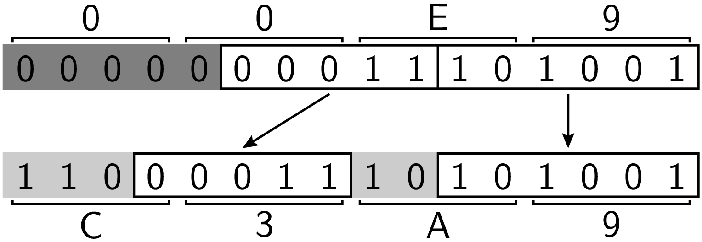
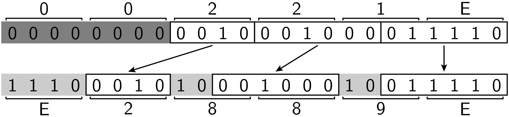
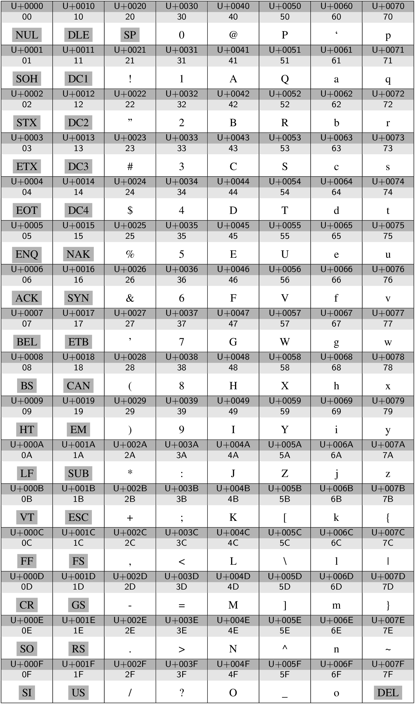
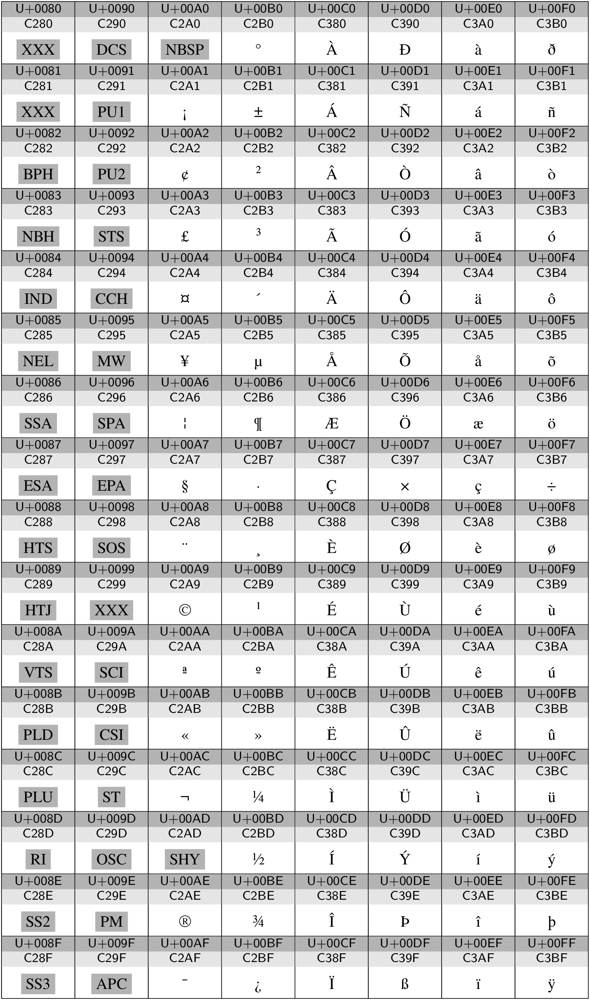
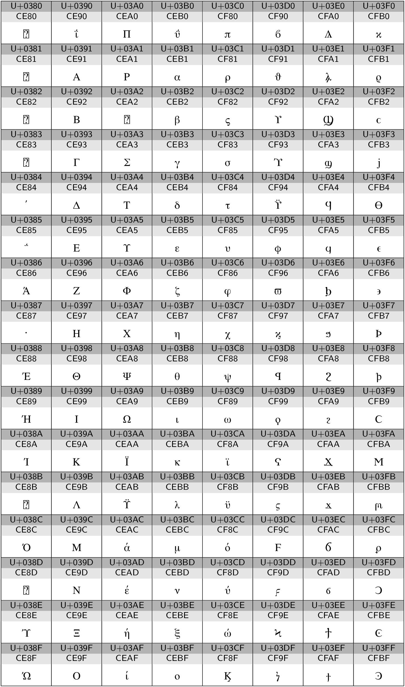
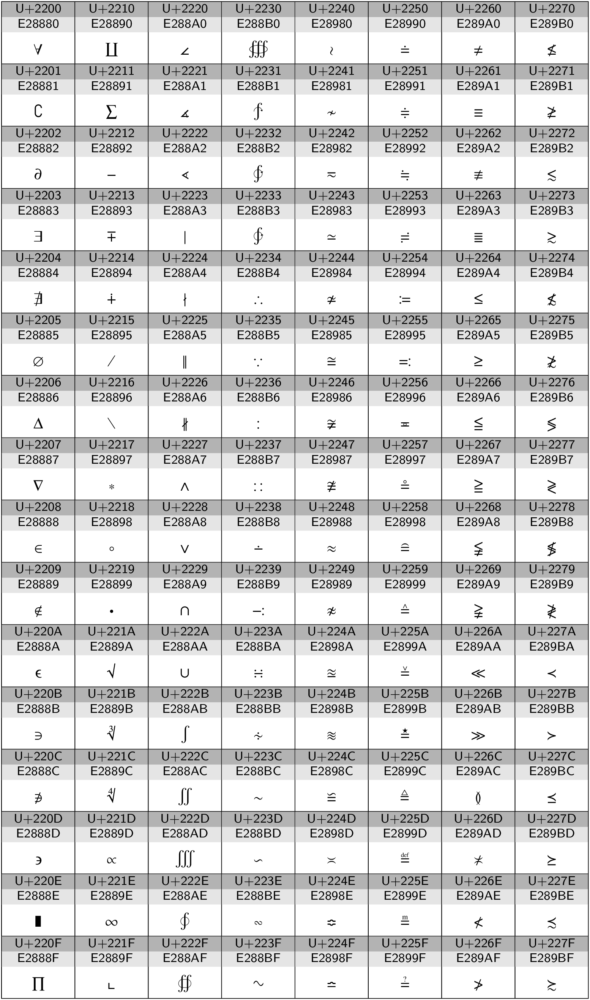

Unicode¶
Auch Schriftzeichen müssen im Computer binär kodiert werden. [1] Bereits 1967 wurde der American Standard Code for Information Interchange (ASCII) als Standard veröffentlicht, wobei aber auch andere Kodierungen insbesondere auf Großrechnern im Gebrauch waren. Der ASCII ist ein 7-Bit-Code und kann somit 128 Zeichen darstellen, die auf der ersten der Codetabellen gezeigt ist, die auf den folgenden Seiten dargestellt sind. Die grau unterlegten Akronyme stellen Steuerzeichen dar, wobei SP ein Leerzeichen bezeichnet und damit auch zu den druckbaren Zeichen gerechnet werden kann. Zu den heute noch wichtigen Steuerzeichen zählen:
| Hexcode | Kürzel | Bedeutung | Tastenkombination | Escape-Sequenz |
|---|---|---|---|---|
| 08 | BS | backspace | STRG-H | \b |
| 09 | HT | horizontal tabulation | STRG-I | \t |
| 0A | LF | line feed (neue Zeile) | STRG-J | \n |
| 0C | FF | form feed (neue Seite) | STRG-L | \f |
| 0D | CR | carriage return (Wagenrücklauf) | STRG-M | \r |
| 1B | ESC | escape | STRG-[ |
Bei der Betrachtung der ASCII-Codetabelle fällt sofort das Fehlen von Umlauten auf, die für deutsche Texte benötigt werden, von anderen Schriftsystemen ganz zu schweigen. In einem ersten Schritt liegt daher eine Erweiterung auf einen 8-Bit-Code nahe. Hierfür existieren eine ganze Reihe von Belegungen, die sich am Bedarf bestimmter Sprachen orientieren. Von Bedeutung ist unter anderem die Normenfamilie ISO 8859. Für die deutsche Sprache ist ISO-8859-1 gebräuchlich, der in der zweiten der folgenden Codetabellen dargestellt ist und auch als »Latin-1« bekannt ist. Auch hier sind wieder eine Reihe von Steuerzeichen vertreten, unter anderem ein nonbreakable space (NBSP) und ein soft hyphen (SHY). Der zu den Zeichen gehörige Code ergibt sich aus den letzten beiden Stellen des Unicode Codepoints, der an dem vorangestellten U+ erkenntlich ist. Beispielsweise wird das »ä« durch 0xEA kodiert. Da das Eurozeichen in ISO-8859-1 nicht enthalten ist, ist auch die Norm ISO-8859-15 von Bedeutung, die sich an 8 Stellen von ISO-8859-1 unterscheidet.
In neuerer Zeit hat der Unicode-Standard [2] enorm an Bedeutung gewonnen, da er das Ziel hat, alle weltweit gebräuchlichen Zeichen zu kodieren. Die aktuelle Version 6.2 [3] umfasst 110117 Zeichen und bietet noch genügend Platz für Erweiterungen. Jedes Zeichen ist einem so genannten Codepoint zugeordnet, der Werte zwischen 0x00 und 0x10FFFF annehmen kann. Da damit jedes Zeichen statt üblicherweise einem Byte nun drei Byte benötigen würde, werden die Unicode-Zeichen geschickt kodiert. Für westliche Sprachen ist die Kodierung UTF-8 besonders geeignet, da die ASCII-Zeichen im Bereich 0x00 bis 0x7F ihre Bedeutung beibehalten. Wir beschränken uns daher im Folgenden auf die Erklärung dieser Kodierung.
Die UTF-8-Kodierung ist in den folgenden Codetabellen unter dem entsprechenden Unicode Codepoint angegeben. Dabei kommen in diesen Beispielen 1-, 2- und 3-Byte-Werte vor. Im Allgemeinen können sogar 4 Bytes auftreten.
Im Bereich 0x00 bis 0x7f wird das letzte Byte des Codepoints verwendet und auf diese Weise Übereinstimmung mit ASCII erreicht. Somit lassen sich in einer westlichen Sprache verfasste Texte weitestgehend unabhängig von der tatsächlichen Kodierung lesen. Außerdem wird die Mehrzahl der vorkommenden Zeichen platzsparend kodiert.
Ist das führende Bit eine 1, so handelt es sich um einen Mehrbytecode. Im Bereich 0x0080 bis 0x07FF werden zwei Bytes zur Kodierung verwendet. Die elf relevanten Bytes werden dabei wie in folgendem Beispiel gezeigt auf die zwei Bytes verteilt:
{kind=link}
Dabei wird der Codepoint 0xE9 des Zeichens »é« auf den UTF-8-Code 0xC3A9 abgebildet.
 Was würde ein Programm, das von einer Latin-1-Kodierung ausgeht,
in diesem Fall anzeigen?
Was würde ein Programm, das von einer Latin-1-Kodierung ausgeht,
in diesem Fall anzeigen?
Beispiele von 2-Byte-Codes sind in der zweiten und dritten der im Folgenden abgebildeten Codetabellen zu sehen. Dabei handelt es sich zum einen um die oberen 128 Zeichen der ISO-8859-1-Norm und zum anderen um griechische und koptische Zeichen im Unicode-Standard.
Die in der vierten Codetabelle gezeigten mathematischen Symbole erfordern einen 3-Byte-Code, der sich wie im folgenden Beispiel für das Zeichen »∞« gezeigt aus dem Unicode Codepoint ergibt:
{kind=link}
Aus 4 Bytes bestehende Codes ergeben sich durch entsprechende Verallgemeinerung für Codepoints zwischen 0x010000 und 0x10FFFF, wobei der UTF-8-Code dann mit 0xF beginnt.
   {kind=link}
{kind=link}
{kind=link}
{kind=link}
Footnotes
| [1] | Eine ausführlichere Darstellung der Entwicklungsgeschichte von Zeichenkodierungen gibt Y. Haralambous, Fonts & Encodings (O’Reilly, 2007). |
| [2] | www.unicode.org |
| [3] | www.unicode.org/versions/Unicode6.2.0/ |